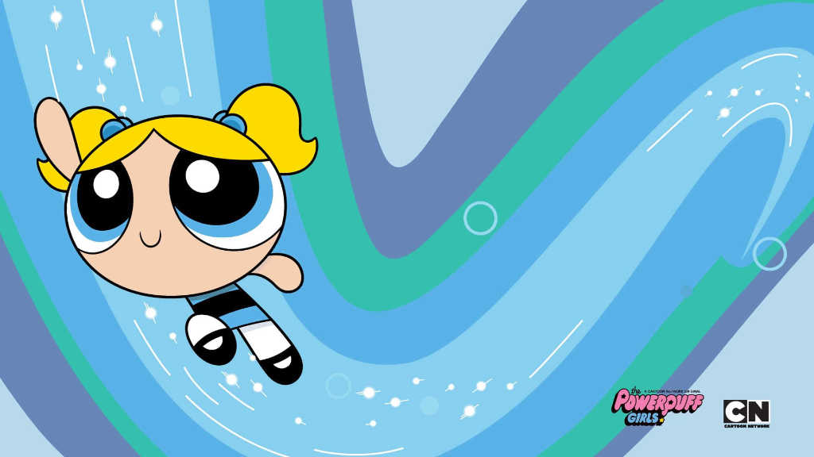
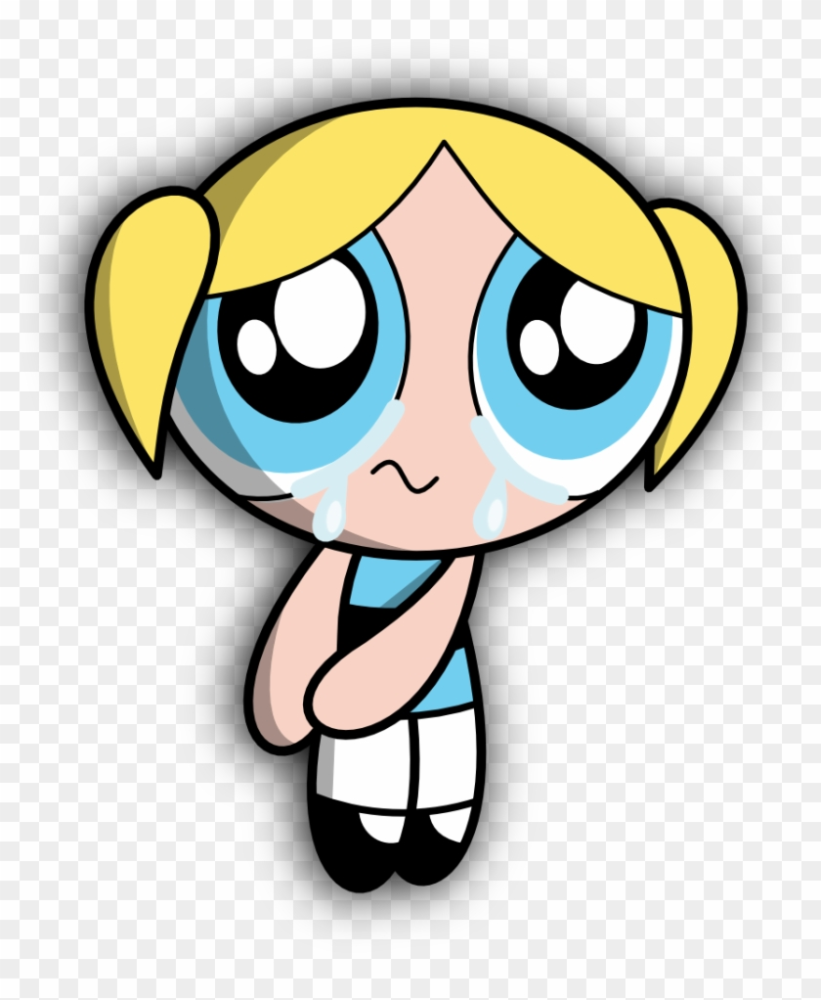

Why Bubbles Is My Favorite Powerpuff Girl
October 03, 2026 by Abby-Gayle Myers

Ever since I was little, Bubbles has always been my favorite character from The Powerpuff Girls. People usually think Blossom is the leader and Buttercup is the fighter, but Bubbles brings the heart to the whole team. She is cheerful, loves cute animals, and always tries to see the good in everyone.
Even though she is super sweet, she is definitely not helpless. Whenever Townsville is in danger, she flies in fast and uses her sonic scream to protect her sisters. I love that she shows you can be soft and kind while still being really strong when it counts.
Octi and Being Proud of Who You Are
October 07, 2026 by Abby-Gayle Myers

One thing I have always loved about Bubbles is how comfortable she is being herself. She carries around her favorite purple stuffed octopus named Octi, and she is never embarrassed about it. She is sensitive and cries easily, but she never pretends to be someone else just to fit in.
Between studying computer science and working through tough coding assignments, college can feel pretty overwhelming at times. Watching how Bubbles stays positive and stands up for what she loves is a great reminder that it is completely fine to show your emotions and still get things done.